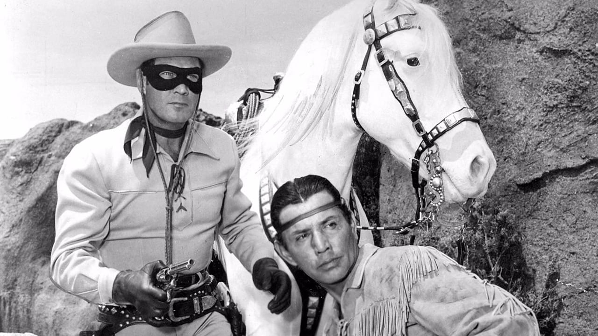
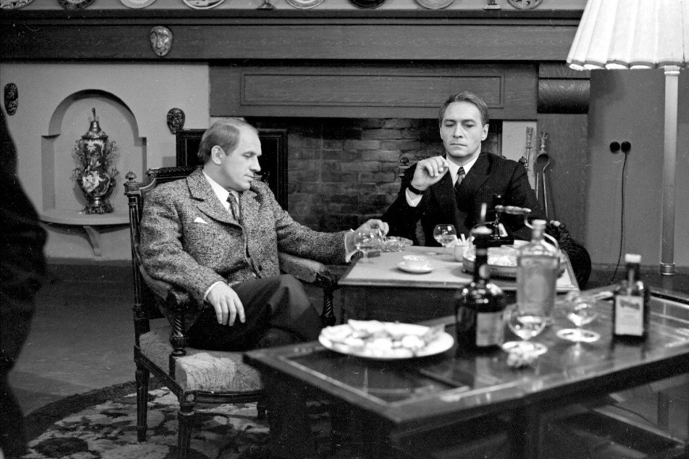
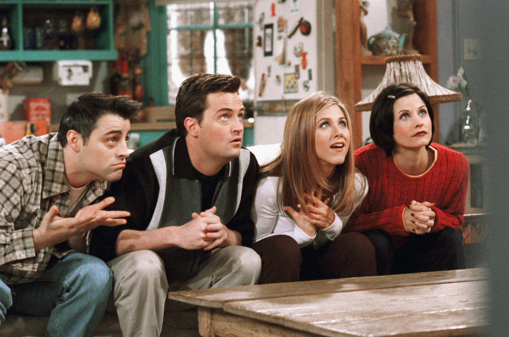
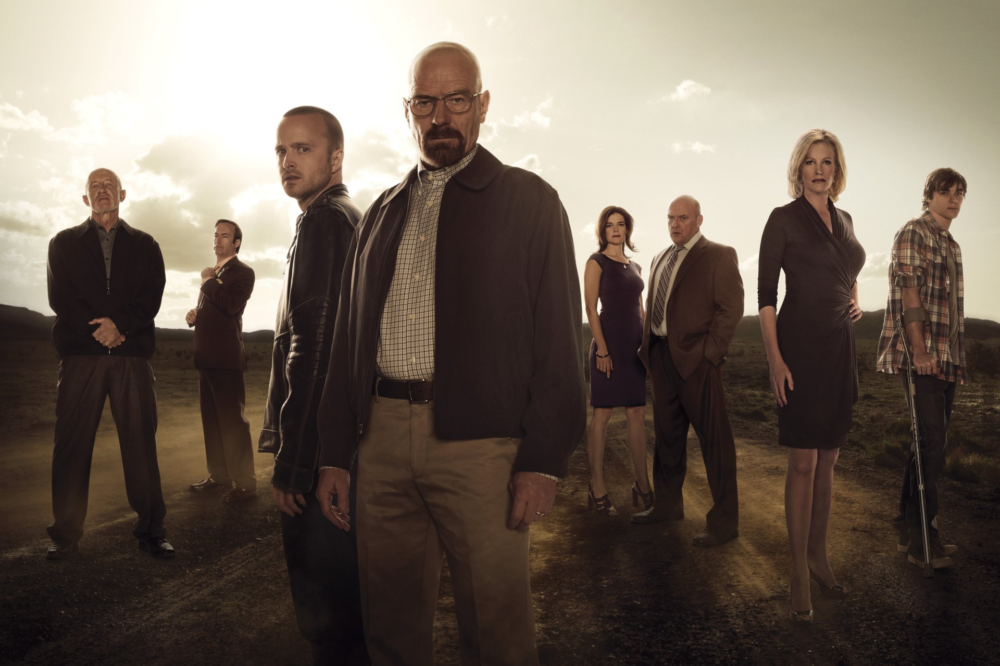
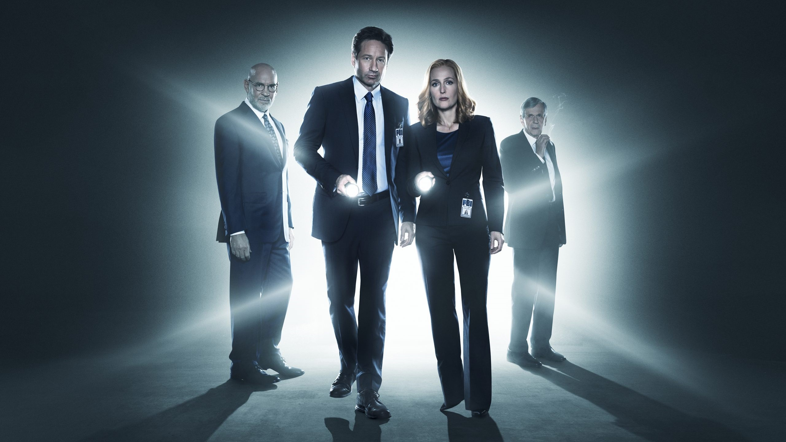

Немного о сериалах
Сериал (телесериал) - считается одним из видов кинематографического искусства. Представляет собой произведение, которое состоит из большого количества частей (серий), которые объединены одним сюжетом, персонажами или творческой идеей. Подавляющее большинство всех сериалов построены на общности героев, зачастую действия (сцены) сериала также происходят на фоне одних и тех же декораций. Продолжительность серий относительно небольшая - до 40-50 минут. В отличие от кинематографических фильмов, показ (прокат) которых может осуществляться в кинотеатрах (на большом экране), сериалы транслируются по телевидению, также сериалы есть возможность смотреть в интернете ни их официальных веб-сайтах или сайтах транслирующих их телевизионных каналов.
История возникновения сериалов
Самые первые телесериалы стали снимать в США в 50-х годах прошлого века. Их прототипом были радионовеллы, возникшие как жанр в 30-е годы - короткие мелодрамки, которые зачитывались в дневном эфире, а развязка сюжета всегда откладывалась до следующего раза. В силу того, что спонсорами этих радионовелл обычно выступали компании, которые производили мыло и чистящие средства их стали называть “Мыльными операми”. С развитием кинематографа эти истории начали экранизировать. Первоначально основной аудиторией телесериалов были домохозяйки. Но впоследствии это явление распространилось и на другие социальные и возрастные группы. На сегодняшний день среднестатистический американец проводит перед телевизором около 7 часов, а просмотр телесериалов занимает второе место после вечерних новостей по популярности.
Самым первым в мире телесериалом считается “Одинокий рейнджер”. Он был показан в США в период с 1949 по 1957 года. Сериал начинается с того, что шесть рейнджеров попадают в засаду устроенную бандитами. Пятеро из них погибают, шестого, тяжело раненного, находит и выхаживает индеец по имени Тонто. Вместе они начинают бороться с преступностью на Диком Западе.
В СССР появление сериалов неразрывно связывают с известной теленовеллой “Семнадцать мгновений весны”. Популярность его была неоспорима, даже в МВД отмечали, что на время трансляции его по телевидению уровень преступности снижался до нуля. После Перестройки в СССР начался бум мыльных опер - американских и мексиканских сериалов, которые не менее сильно “покорили” аудиторию. Первыми стали транслировать “Дикую Розу”, “Рабыню Изауру”, “Богатые тоже плачут”, “Санта Барбару”. После развала Советского Союза и общим экономического упадка в странах соцлагеря (России, Украине, Узбекистане, Казахстане, Беларуси, Таджикистане) о съемках своих сериалов (как и полнометражных фильмов) не шло и речи. Только к концу 90-х зрителя стали радовать экранизациями романов Марининой (сериал “Каменская”), Незнанского (“Марш Турецкого”, “Тайна следствия”), в то же время были сняты такие российские сериалы как “Менты”, “Бригада” и многие другие “шедевры”.
Топ 3 сериалов всех времён
Друзья (1994-2004)
Шестеро лучших друзей — трое парней, трое девушек — живут по соседству. Девушки в одной квартире, ребята — напротив. Они ссорятся, мирятся, влюбляются друг в друга, попадают в необычные истории, проводят вечера в любимом кафе. Каждая серия длится 22 минуты.
Во все тяжкие (2008-2013)
Пять сезонов. В основе сюжета лежит история учителя химии Уолтера Уайта, который узнал, что болен раком легких. Он понимает, что ему осталось жить считанные месяцы, и решает поставить на кон все — чтобы обеспечить свою семью, жену и новорожденного ребенка. Как быстро заработать кучу денег, если ты хорошо знаешь химию? Может быть, попробовать варить амфетамин? Вскоре к онкобольному химику присоединяется молодой Джесси Пинкман — его бывший ученик, которого исключили из школы.
Секретные материалы (1993-2002)
Девять сезонов. В главных ролях снимаются Джиллиан Андерсон и Дэвид Духовны, которые предстают перед зрителями в образе агентов ФБР Даны Скалли и Фокса Малдера. Они расследуют десятки нераскрытых дел, которые каким-то образом связаны с паранормальными явлениями, инопланетянами, случаями вампиризма и оборотничества… Каждая серия — это отдельный сюжет.
